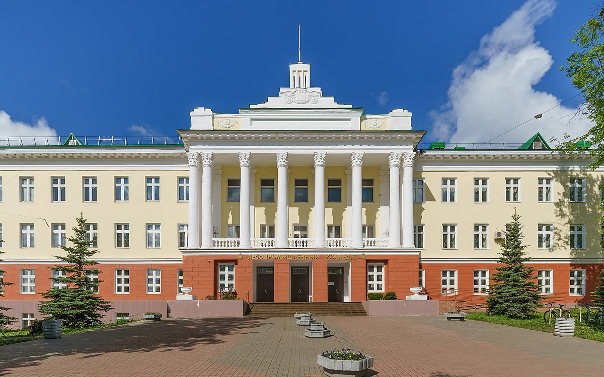

<html lang="ru"></html><head><meta charset="UTF-8"/><meta http-equiv="X-UA-Compatible" content="IE=edge"/><meta name="viewport" content="width=device-width, initial-scale=1.0"/><link rel="stylesheet" href="style.css"/><title>EDU43</title><link rel="icon" href="./img/шляпадлялоготипацветанегр.png"/><link href="https://fonts.googleapis.com/css?family=Montserrat:100,100italic,200,200italic,300,300italic,regular,italic,500,500italic,600,600italic,700,700italic,800,800italic,900,900italic" rel="stylesheet"/></head><body><header><div class="wrapper"><div class="header-nav"><div class="header-nav-logo"><div class="header-nav-logo-img"></div><div class="header-nav-logo-text"><h4><a href="/">edu43.ru</a></h4></div></div><div class="header-nav-burger"><span></span></div><div class="header-nav-navigation"><ul><li><a href="#">Главная</a></li><li><a href="#">ВУЗЫ</a></li><li><a href="#">О проекте</a></li><li><a href="#">101 Digital</a></li></ul></div></div></div></header></body><div class="wrapper"><div class="button-back"><a href="/">Назад</a></div><section class="vyz-main"><div class="wrapper"><div class="vyz-main-header"><h1>КЛПК</h1><h3>Кировский Лесопромышленный Колледж</h3></div><div class="vyz-main-block"><div class="vyz-main-block-img"></div><div class="vyz-main-block-text"><p>Ведёт свою историю от Кировского лесотехнического техникума и Кировского механического техникума, созданного 1 апреля 1919 года . Кировский лесопромышленный колледж  был основан  18 марта 1949 года приказом Министра лесной и бумажной промышленности СССР Георгия Михайловича Орлова . В 1950 году с 23 февраля по 10 августа велись работы по сооружению первого, деревянного корпуса техникума. 1 сентября 1950 года начались занятия в деревянном корпусе. В следующем году началось строительство нового кирпичного корпуса и завершилось в 1954 году. Новый корпус расположился в центральном районе города, на улице Карла Маркса. В 1954 году состоялся первый выпуск, с 1 сентября занятия начались в новом корпусе. </p></div></div></div></section><section class="vyz-secondary"><div class="wrapper"><div class="vyz-secondary-header"><h2>Направления</h2></div><div class="vyz-secondary-info"><div> Технология деревообработки</br>
Технология комплексной переработки древесины</br>
Технология лесозаготовок</br>
Садово-парковое и ландшафтное строительство</br>
Техническое обслуживание и ремонт двигателей, систем и агрегатов автомобилей</br>
Техническая эксплуатация подъёмно-транспортных, строительных, дорожных машин и оборудования</br>
Экономика и бухгалтерский учет</br>
Операционная деятельность в логистике</br>
Право и организация социального обеспечения</div></div></div></section><div id="url"></div><section class="vyz-secondary"><div class="wrapper"><div class="vyz-secondary-header"><h2>Официальный сайт</h2></div><div class="vyz-secondary-info"><a href="https://www.kirovlpk.ru" target="_blank" rel="noopener noreferrer">Ссылка на сайт</a></div></div></section></div><footer><div class="wrapper"><div class="footer-nav"><div class="header-nav-logo"><div class="header-nav-logo-img"></div><div class="header-nav-logo-text"><h4><a href="#">edu43.ru</a></h4></div></div><div class="header-nav-navigation"><ul><li><a href="#">Главная</a></li><li><a href="#">ВУЗЫ</a></li><li><a href="#">О проекте</a></li><li><a href="#">101 Digital</a></li></ul></div></div><div class="footer-logo"><div class="footer-logo-text"><h4>Разработано 101 Digital</h4><p>101.digital.web@gmail.com</p></div></div></div></footer><script src="https://code.jquery.com/jquery-3.6.0.slim.js" integrity="sha256-HwWONEZrpuoh951cQD1ov2HUK5zA5DwJ1DNUXaM6FsY=" crossorigin="anonymous"></script><script src="./js/menu.js"></script><script src="./js/parallax.min.js"></script><script src="./js/app.js"></script><script src="https://cdnjs.cloudflare.com/ajax/libs/parallax/3.1.0/parallax.min.js"></script>